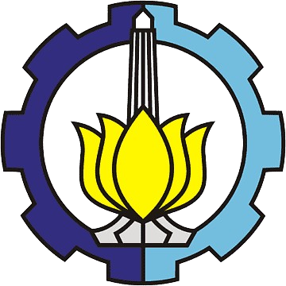
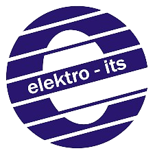

I am a new student of the 2023 class in the Telecommunication Engineering Department of the Electrical Engineering
Work Experience
- Creating poster design
My goal is to capture the essence of the message or event and translate it into a visually compelling design that effectively communicates with the target audience. My skills involve various design elements, including typography, visual composition, color theory, and image selection. I pay meticulous attention to each detail to ensure that the final poster not only meets but exceeds the client's expectations.
Organizational experience
Cinematography Lens Editor SMANSA – Tuban, Indonesia (2020 – 2023)
- Creating posters
Creating visually appealing and informative elements for various purposes, ranging from campus events to promotional campaigns, is an integral part of my role. My responsibilities involve the development of poster designs that reflect the goals and messages to be conveyed in a creative and effective manner. Occasionally, I create posters for significant days such as public holidays.
- Editor Film
As an editor, within a specific event project, I also play a role in reviewing materials to ensure the accuracy of information and clarity of the message. I strive to create content that captivates the audience's attention and contributes to the overall achievement of the event's goals.
Dies Natalis Music ITS – Surabaya, Indonesia
- Creative Design Team (Sep – Nov 2023)
Designing a committee lanyard involves considering both aesthetics and functionality to create a distinctive and purposeful accessory. Designing a committee lanyard for a Dies Natalis Music celebration involves incorporating elements that capture the essence of the musical theme and the celebratory nature of the event.
- Designing a committee ID card
Designing a committee ID card for Dies Natalis Music requires a balance between functionality, aesthetics, and the celebration of musical themes. Feature the official Dies Natalis Music celebration logo prominently on the ID card. Make sure the logo is clear, high-resolution, and reflects the essence of the event.
Staff Archery ITS – Surabaya, Indonesia (Feb 2024 – Present)
- Eksternal
Responsible for conveying a positive image through social media and directly both within and outside the ITS campus. Ensuring that the company's messages are conveyed clearly, planning social activities and campus events that are open to the public, and handling responses to various issues.